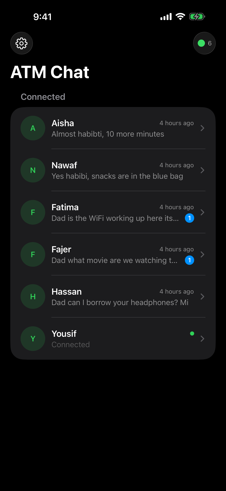
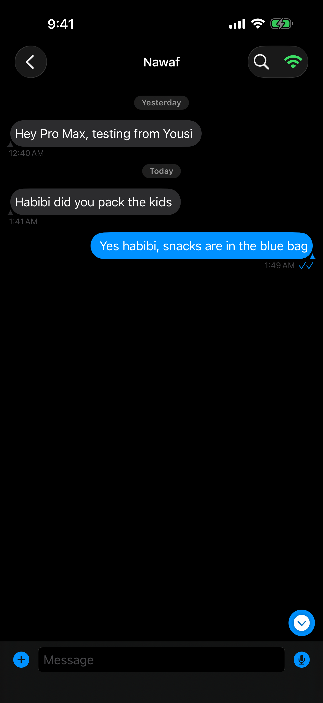
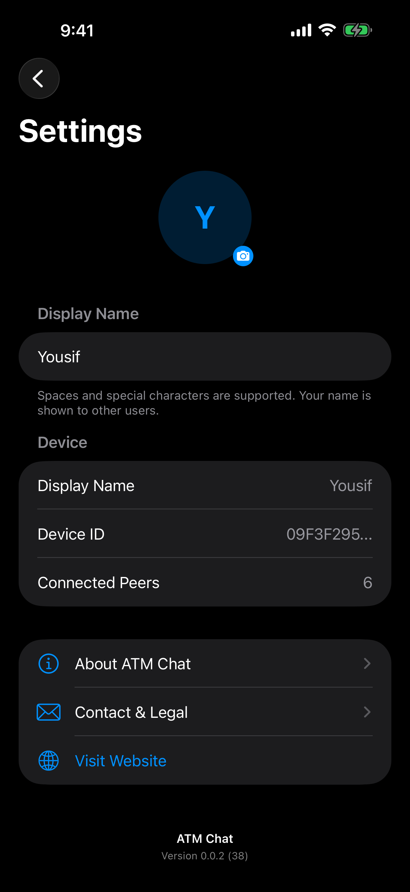
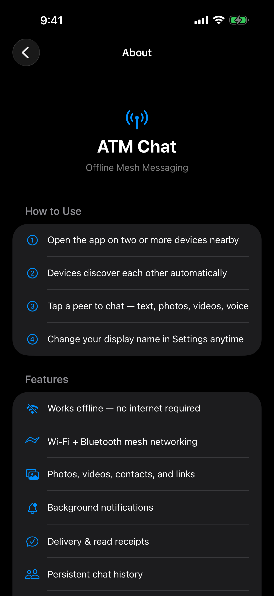
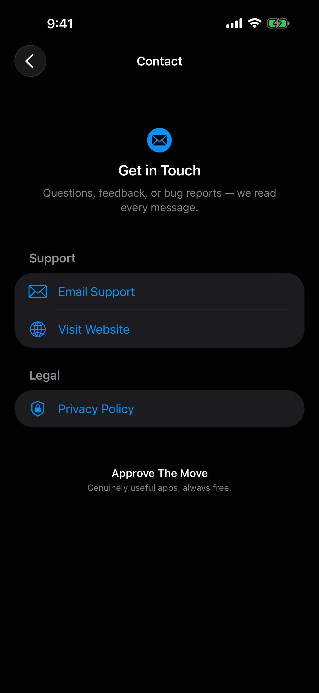

ATMChat
Fully offline mesh messenger. Exchange text, voice messages, photos, videos, and files between nearby iPhones via Wi-Fi and Bluetooth — no servers, no accounts, no internet.
Screenshots





Scroll to see more →
Features
Offline Messaging
No Wi-Fi? No cellular? No problem. ATMChat works entirely over local Wi-Fi and Bluetooth connections.
Mesh Networking
Messages can route through intermediate devices to reach people beyond your direct range.
Rich Messages
Send text, photos, videos, voice messages, contacts, links with previews, and files.
Delivery & Read Receipts
See when your messages are delivered and read. Know the status of every message you send.
Reactions & Replies
React to messages with emoji and reply to specific messages with quoted context.
Offline Queue
Messages are queued when peers are temporarily out of range and sent automatically when they reconnect.
No Account Required
No sign-up, no email, no phone number. Your device is your identity. Just open the app and start chatting.
Persistent History
Chat history is saved locally on your device. Pick up conversations even after peers disconnect.
Delete for Everyone
Made a mistake? Delete messages for all participants, not just yourself.
How to Use
Open the app — No sign-up needed. Your device gets a unique identity automatically.
Discover nearby devices — Other ATMChat users nearby appear automatically via Wi-Fi and Bluetooth.
Start chatting — Tap any nearby device to open a conversation. Send text, photos, videos, or files.
Stay connected — Messages queue when peers are out of range and deliver automatically when they're back.
Customize — Set your display name and avatar in Settings. Change the app theme to match your style.
Frequently Asked Questions
Do I need internet to use ATMChat?
No. ATMChat works entirely over local Wi-Fi and Bluetooth. It's designed for situations where there's no internet — travel, events, remote areas, or anywhere you just don't want to depend on a cellular connection.
How far away can another person be?
Direct Wi-Fi range is typically 30–100 meters indoors. With mesh routing through other devices, messages can reach even further by hopping between phones in between you and the recipient.
Can I send photos and videos offline?
Yes. Photos, videos, voice messages, contacts, and files all transmit directly between devices over the local connection. Nothing goes through a server.
Is the communication secure?
Messages use Apple's MultipeerConnectivity framework which handles secure local transport. Since everything stays on your local network, data never touches external servers.
Do I need to create an account?
No. There's no sign-up, email, or phone number required. Your device is your identity.
Privacy
ATMChat is fully decentralized. Messages travel directly between devices — no servers involved. Chat history is stored only on your device. Nothing is collected or transmitted externally.